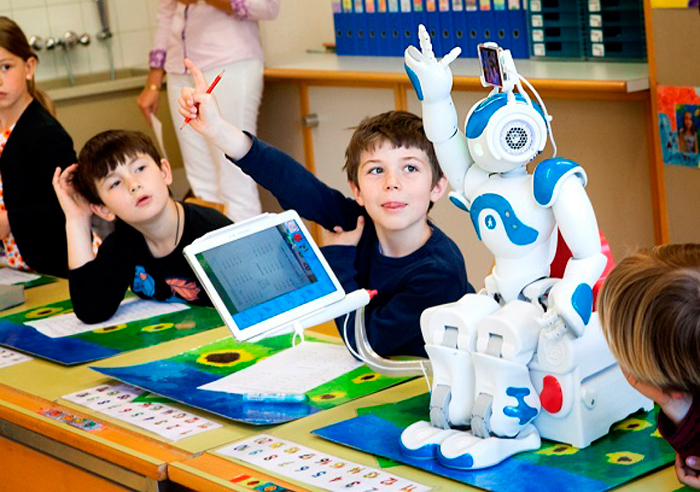
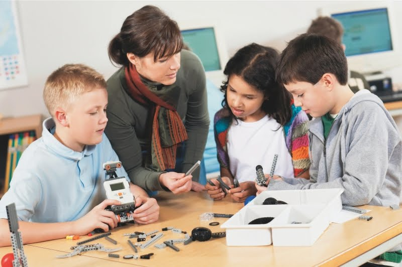
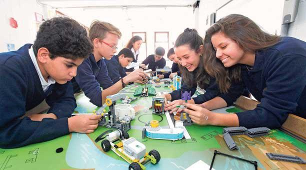

Origen

La robótica educativa se centra principalmente en la creación de un robot con el único fin de desarrollar de manera mucho más práctica y didáctica las habilidades motoras y cognitivas de quienes los usan. De esta manera se pretende estimular el interés por las ciencias duras y motivar la actividad sana. Así mismo hacer que el niño logre una organización en grupo, discusiones que permitan desarrollar habilidades sociales, respetar cada uno su turno para exponer y aprender a trabajar en equipo.10
La robótica educativa tiene sus orígenes entorno a los años 60, cuando un grupo de investigadores del Laboratorio de Medios del Instituto Tecnológico de Massachusetts propone la construcción de dispositivos tecnológicos que permitiesen a los niños interactuar y programarlos para ejecutar determinadas acciones. Es aquí cuando el grupo de investigación estableció el convenio con la empresa LEGO para desarrollar lo que se conoció como LEGO/Logo, consistente en la integración de piezas de construcción de lego con elementos de programación que podrían ser ejecutados desde un ordenador. Más tarde, en torno a los años 80, la compañía LEGO ya había difundido estos equipos o juguetes por todo el mundo con fines educativos.11
Objetivos

Algunos objetivos de la robótica educativa son:
- Hacer que los educandos sean más ordenados.
- Promover los experimentos, donde el equivocarse es parte del aprendizaje y del auto-descubrimiento.
- Ser más responsables con sus cosas.
- Desarrollar mayor movilidad en sus manos.
- Desarrollar sus conocimientos.
- Desarrollar la habilidad en grupo, permitiendo la socialización de las las personas.
- Desarrollar sus capacidades creativas.
- Poder observar cada detalle.
- Conocer el funcionamiento del lenguaje de programación.
- Desarrollar el aprendizaje de forma divertida.
- Adaptar a los alumnos en los procesos productivos actuales, en el que la automatización juega un rol muy importante.
Aprender Jugando

La actividad implica un componente lúdico, intrínseco a la construcción de modelos, a la discusión de las mejores soluciones con otros alumnos, … Este componente lúdico es el que remata el éxito de la actividad, ya que, si por todo lo explicado anteriormente es una actividad ideal desde el punto de vista de los padres preocupados por la formación de sus hijos, este último punto es el que convierte la actividad en ideal desde el punto de vista de los niños. Así pues, es la actividad lúdico-educativa ideal tanto para padres como para hijos.
Aspectos que trabaja

Campos de Conocimiento.*
- Ciencias
- Matemáticas
- Ingeniería
- Programación e informática
- Tecnología
- Lenguaje
Habilidades y Competencias.*
- Construcción lógica del pensamiento
- Creatividad
- Resolución de problemas
- Esfuerzo y perseverancia
- Trabajo en equipo
Habilidades Sociales y Valores*
- Responsabilidad
- Tolerancia
- Respeto
- Liderazgo
- Solidaridad y apoyo
- Constancia y perseverancia